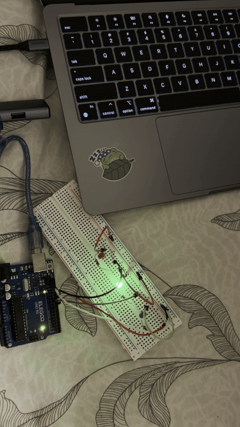
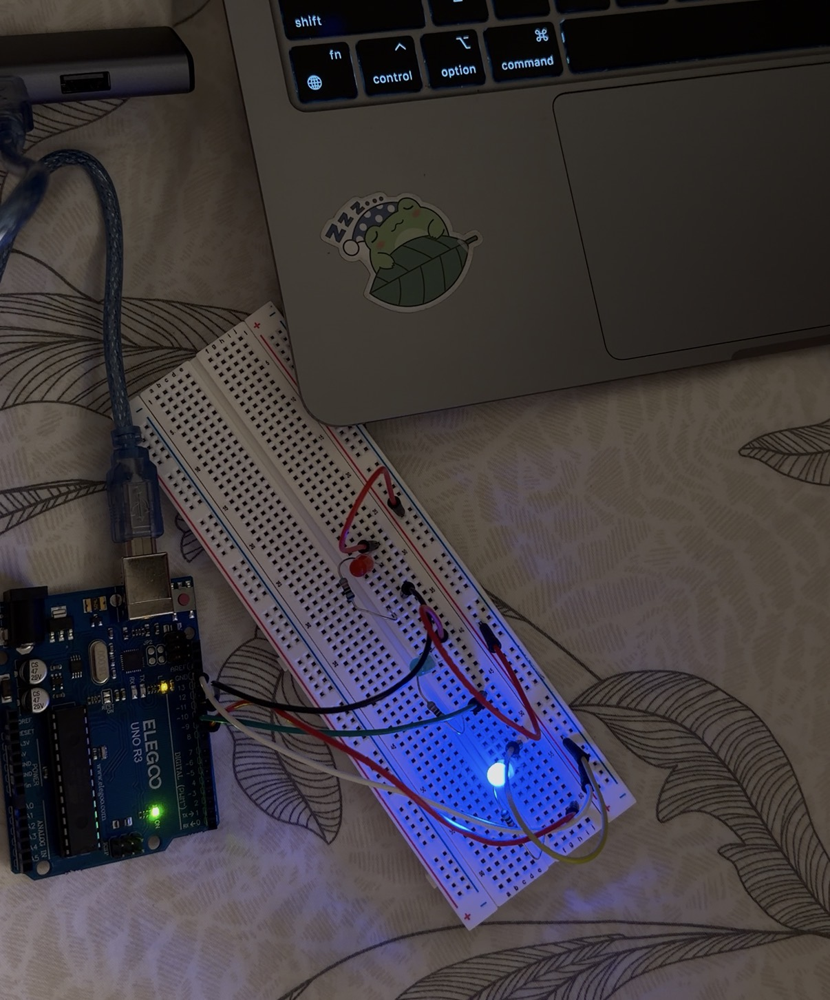
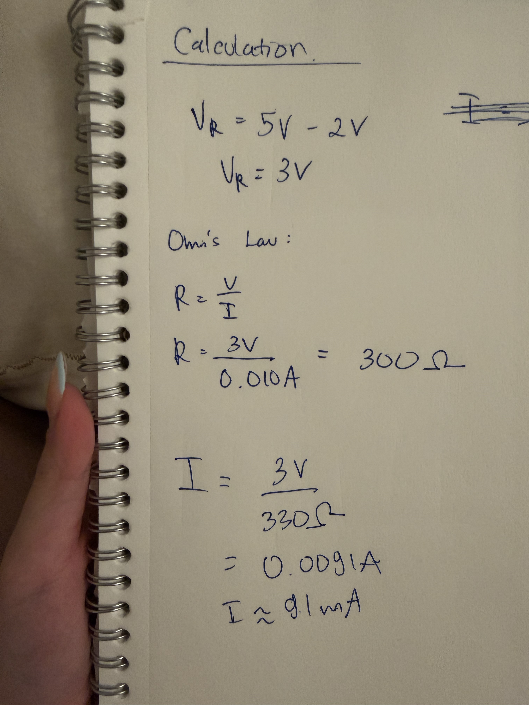
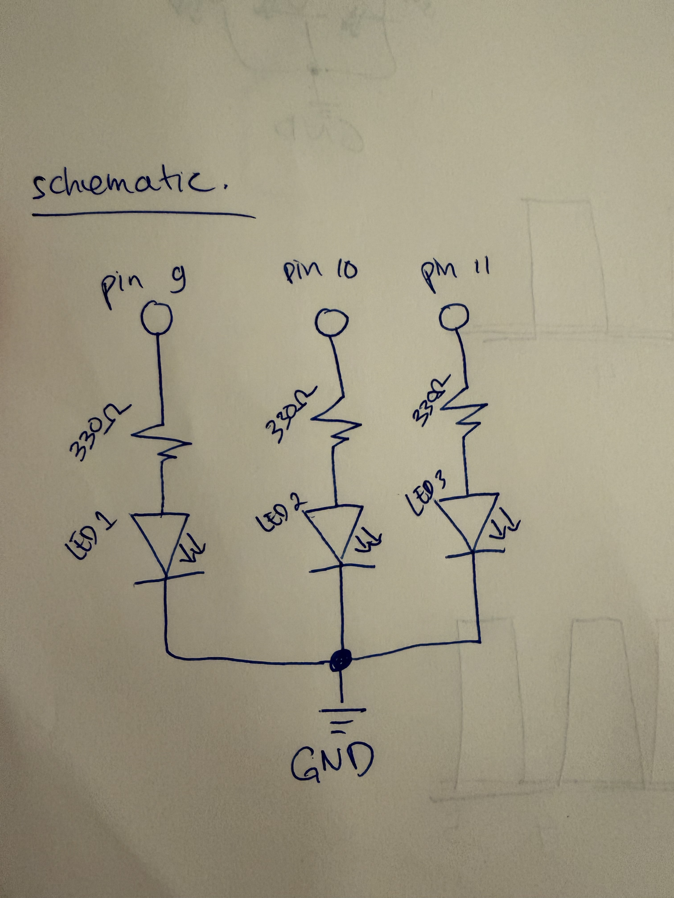
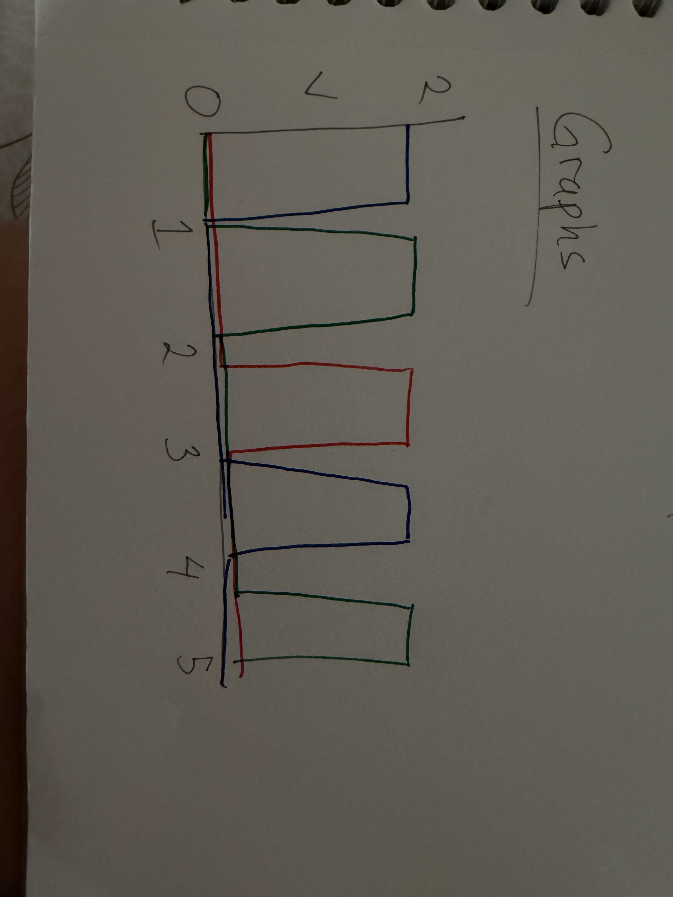

This GIF shows the programmed circuit in real time. As it can be seen, the blue, green, and red LEDs blink indepently!
// pin for blue LED
int bluey = 9;
// pin for green LED
int greeny = 10;
// pin for red LED
int reddy = 11;
// brightess when LED is on
int on = 100;
// turn LED off
int off = 0;
void setup() {
// set blue, green, and red LED as output
pinMode(bluey, OUTPUT);
pinMode(greeny, OUTPUT);
pinMode(reddy, OUTPUT);
}
void loop() {
// blink for blue LED
analogWrite(bluey, on);
delay(300);
analogWrite(bluey, off);
// blink for green LED
analogWrite(greeny, on);
delay(300);
analogWrite(greeny, off);
// blink for red LED
analogWrite(reddy, on);
delay(300);
analogWrite(reddy, off);
}
This image shows the circuit. The blue, green, and red LEDs are connected to pin 9, 10, and 11 respectively. Then, a resistor is connected to each LED. Finally, the circuit is connected to ground.


This image shows how the resistor is calculated. This calculation shows how I decided what resistor to use for the LEDs. The Arduino outputs 5V, and the LED uses about 2V, so the resistor needs to handle the remaining 3V. Using Ohm's Law, I calculated that I would need about a 300 Ω resistor if I wanted around 10 mA of current. I used a 330 Ω resistor because it is a common resistor value and is slightly higher, which helps keep the current at a safe level. With 330 Ω, each LED draws about 9.1 mA. This is enough current to light the LED without risking damage to the LED or the Arduino.
This image shows the schematic I drew. This schematic shows how I connected the three LEDs to the Arduino. Each LED uses a different digital pin, with LED 1 on pin 9, LED 2 on pin 10, and LED 3 on pin 11. I used a 330 Ω resistor for each LED to keep the current at a safe level. The other side of each LED is connected to the same ground. Since each LED has its own pin, I can control them separately in the code and make them blink in different patterns.


This image shows how the graph of the circuit. This graph shows the blinking pattern of the three LEDs over time. Each color represents a different LED, and the high part of each line means that LED is turned on while the low part means it is turned off. The LEDs turn on at different times, which shows that they are being controlled independently by the Arduino. The pattern then repeats, creating a sequence instead of having all three LEDs blink at the same time. This graph helps show how the code changes the voltage across each LED over time and how the blinking pattern is created.
With an Arduino Uno, I could control 14 LEDs independently using the digital pins. Since each LED in my circuit uses about 9.1 mA, having all 14 on at the same time would use around 127 mA total. I would still have to be careful not to go over the Arduino's current limits.
For me, the LEDs started to look like they were just staying on at around 50 - 60 blinks per second. That is around 8 - 10 ms of delay time. At that speed, the blinking happens so fast that it is hard for my eyes to notice each individual flash.